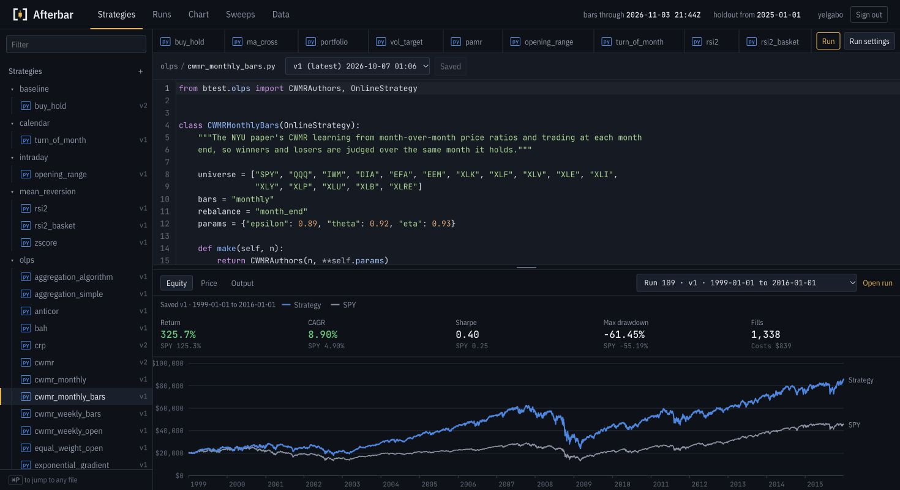

Afterbar
Previously btest
A workbench for testing trading strategies.

From an idea to a test
Write a strategy in Python, run it against historical US market data, and compare it with simply holding the market. Each save creates a version, and every result points back to the code that produced it.
The browser workbench brings the editor and results together. Inspect trades, compare runs, and sweep combinations of parameters before taking a strategy to paper trading.
Make the assumptions visible
Backtests can reward hindsight. Afterbar charges trading costs, fills orders after the data used to make a decision, and keeps holdout data separate from parameter sweeps. Results include drawdowns and a benchmark alongside returns.
Account workspaces keep strategies and runs separate. Hosted jobs execute in isolated environments with the market inputs they need.
Built with
Python, Starlette, PostgreSQL, and Parquet market data. A separate worker executes queued backtests and sweeps.